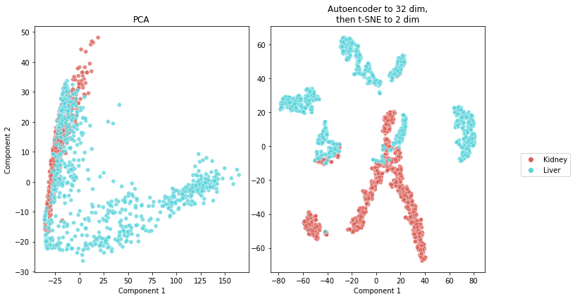

Final Project STAT 259: Single Cell Sequencing Analysis
Contents
Final Project STAT 259: Single Cell Sequencing Analysis¶
from genetools import dataloader
from genetools import ml
Data Preprocessing¶
dp = dataloader.DataPreprocessing(
organs = ["Kidney", "Liver"],
y_label = "organ",
input_path_format = "data/{organ}-counts.csv",
output_path = f"processed_data/data.csv",
bool_filter_zero_variance = True,
bool_filter_mean_diff = True,
bool_take_log = True,
bool_save = True,
num_genes = 1000,
)
data = dp.run()
data.shape
Loading data
Filtering features with zero variance
Filtering features based on difference of group means
(1846, 1001)
Data split¶
m = ml.Models(
data=data,
autoencoder_path="models/autoencoder_best.hdf5",
encoder_path="models/encoder_best.hdf5",
classifier_path_format="models/nn_{size}_best.hdf5",
projection_plot_path="figures/projection.jpg",
cv_path="tables/cv_results.csv",
test_performance_path="tables/test_performance.csv",
roc_path_format="figures/roc_{size}.jpg",
confusion_matrix_path_format="figures/confusion_matrix_{size}.jpg",
max_epochs=500,
verbose=1,
)
# Shape validation for x
m.x.shape, m.x_train.shape, m.x_test.shape
((1846, 1000), (1476, 1000), (370, 1000))
# Shape validation for y
m.y.shape, m.y_train.shape, m.y_test.shape
((1846, 2), (1476, 2), (370, 2))
Autoencoder¶
m.run_encoder()
Autoencoder architecture:
Model: "model"
_________________________________________________________________
Layer (type) Output Shape Param #
=================================================================
input_1 (InputLayer) [(None, 1000)] 0
_________________________________________________________________
dropout (Dropout) (None, 1000) 0
_________________________________________________________________
dense (Dense) (None, 128) 128128
_________________________________________________________________
dropout_1 (Dropout) (None, 128) 0
_________________________________________________________________
dense_1 (Dense) (None, 32) 4128
_________________________________________________________________
dropout_2 (Dropout) (None, 32) 0
_________________________________________________________________
dense_2 (Dense) (None, 128) 4224
_________________________________________________________________
dropout_3 (Dropout) (None, 128) 0
_________________________________________________________________
dense_3 (Dense) (None, 1000) 129000
=================================================================
Total params: 265,480
Trainable params: 265,480
Non-trainable params: 0
_________________________________________________________________
Autoencoder saved at models/autoencoder_best.hdf5
Autoencoder loss on test set
12/12 [==============================] - 0s 2ms/step - loss: 4.9996
Encoder architecture:
Model: "model_1"
_________________________________________________________________
Layer (type) Output Shape Param #
=================================================================
input_1 (InputLayer) [(None, 1000)] 0
_________________________________________________________________
dropout (Dropout) (None, 1000) 0
_________________________________________________________________
dense (Dense) (None, 128) 128128
_________________________________________________________________
dropout_1 (Dropout) (None, 128) 0
_________________________________________________________________
dense_1 (Dense) (None, 32) 4128
=================================================================
Total params: 132,256
Trainable params: 132,256
Non-trainable params: 0
_________________________________________________________________
Encoder saved at models/encoder_best.hdf5
m.plot_encoder_2d_and_compare()

Classifier¶
m.load_encoder()
m.run_classifier()
Small classifier architecture:
Model: "model_2"
_________________________________________________________________
Layer (type) Output Shape Param #
=================================================================
input_1 (InputLayer) [(None, 1000)] 0
_________________________________________________________________
dropout (Dropout) (None, 1000) 0
_________________________________________________________________
dense (Dense) (None, 128) 128128
_________________________________________________________________
dropout_1 (Dropout) (None, 128) 0
_________________________________________________________________
dense_1 (Dense) (None, 32) 4128
_________________________________________________________________
dropout_4 (Dropout) (None, 32) 0
_________________________________________________________________
dense_4 (Dense) (None, 2) 66
=================================================================
Total params: 132,322
Trainable params: 66
Non-trainable params: 132,256
_________________________________________________________________
Larger classifier architecture:
Model: "model_3"
_________________________________________________________________
Layer (type) Output Shape Param #
=================================================================
input_1 (InputLayer) [(None, 1000)] 0
_________________________________________________________________
dropout (Dropout) (None, 1000) 0
_________________________________________________________________
dense (Dense) (None, 128) 128128
_________________________________________________________________
dropout_1 (Dropout) (None, 128) 0
_________________________________________________________________
dense_1 (Dense) (None, 32) 4128
_________________________________________________________________
dropout_5 (Dropout) (None, 32) 0
_________________________________________________________________
dense_5 (Dense) (None, 16) 528
_________________________________________________________________
dropout_6 (Dropout) (None, 16) 0
_________________________________________________________________
dense_6 (Dense) (None, 2) 34
=================================================================
Total params: 132,818
Trainable params: 562
Non-trainable params: 132,256
_________________________________________________________________
Cross-validation for size = small
Cross-validation for size = larger
Cross-validation results:
| accuracy | precision | recall | f1 | roc_auc | categorical_crossentropy | |
|---|---|---|---|---|---|---|
| small | 0.929 | 0.929 | 0.930 | 0.929 | 0.987 | 0.172 |
| larger | 0.946 | 0.946 | 0.945 | 0.946 | 0.991 | 0.153 |
Cross-validation results saved at tables/cv_results.csv
m.run_assessment()
Test set performance:
| accuracy | precision | recall | f1 | roc_auc | |
|---|---|---|---|---|---|
| small | 0.943 | 0.943 | 0.944 | 0.943 | 0.990 |
| larger | 0.908 | 0.908 | 0.909 | 0.908 | 0.982 |
Confusion Matrix Small

Confusion Matrix Larger
ROC curve Small
ROC curve Larger